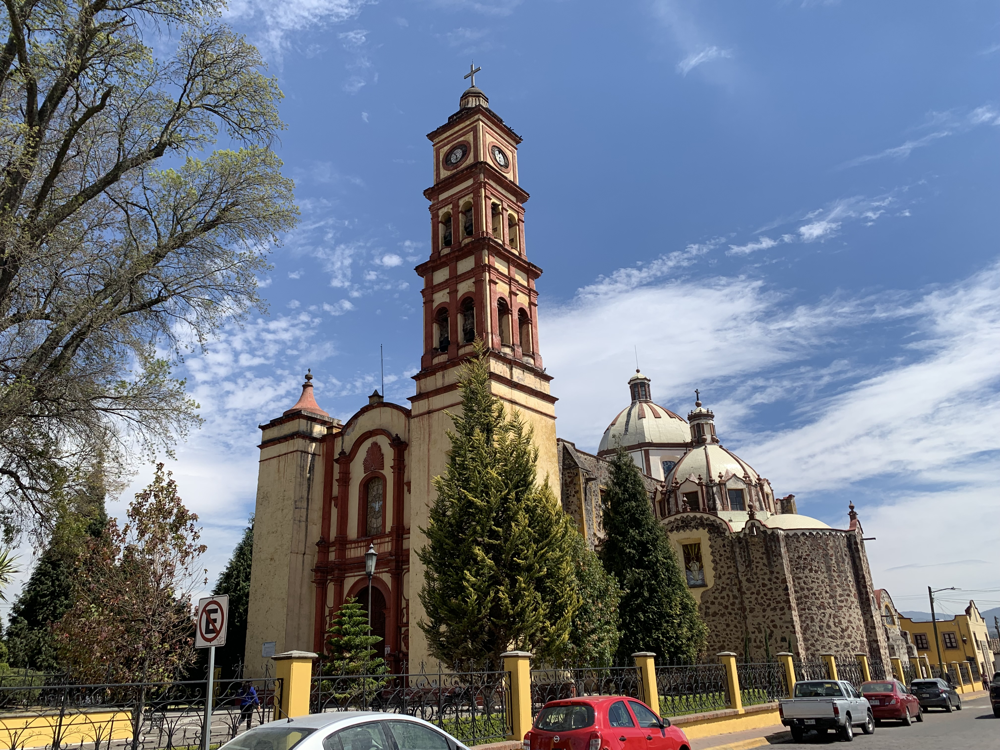
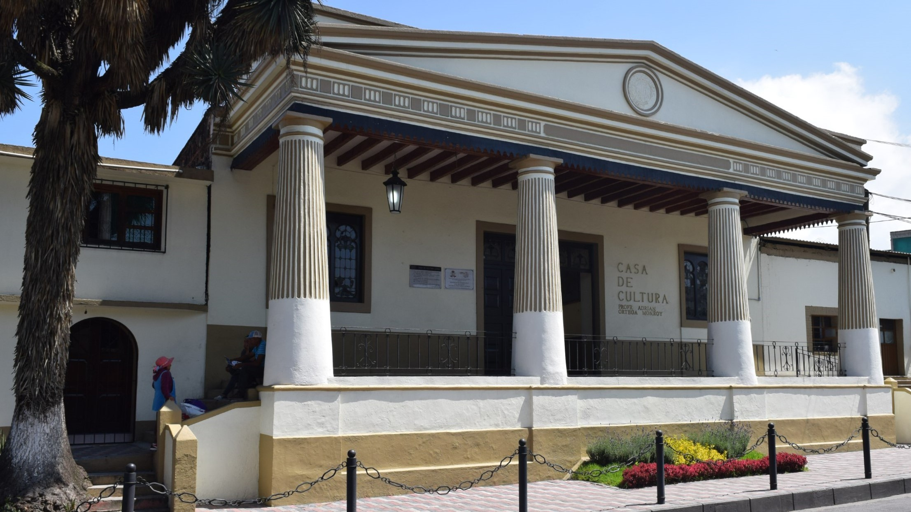
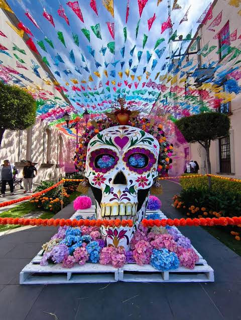
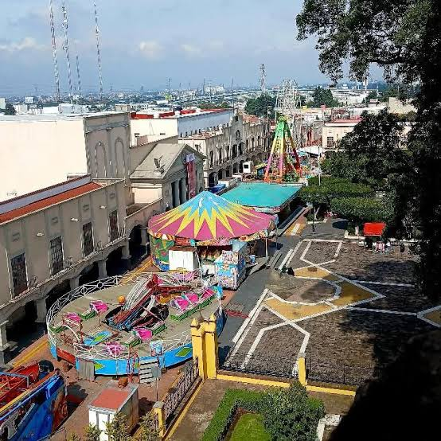

Bienvenido a Lerma
Lerma es un municipio del Estado de México que destaca por su historia, riqueza natural, cultura y tradiciones. En este sitio conocerás algunos de sus lugares más representativos y las costumbres que forman parte de la identidad de su comunidad.
Elaborado por: Asaf
Lugares turísticos de Lerma
El municipio de Lerma cuenta con espacios naturales, históricos y culturales que vale la pena conocer.
Centro de Lerma
El centro de Lerma es uno de los espacios más representativos del municipio. En él se encuentran edificios históricos, comercios y lugares de reunión para sus habitantes.

Ciénagas de Lerma
Las Ciénagas de Lerma forman parte de un importante sistema de humedales. Son un espacio natural que alberga distintas especies de aves y plantas, además de ser importantes para el equilibrio ambiental.
Casa de Cultura de Lerma
Es un espacio dedicado a la promoción del arte, la educación y las expresiones culturales. En él se realizan actividades que ayudan a conservar y difundir las tradiciones de la comunidad.

Tradiciones de Lerma
Las tradiciones de Lerma representan la historia, las creencias y la convivencia de sus habitantes. Estas costumbres se transmiten de generación en generación.
Día de Muertos
Es una celebración en la que las familias recuerdan a sus seres queridos mediante altares, ofrendas, flores de cempasúchil, veladoras y alimentos tradicionales.

Fiestas patronales
En diferentes comunidades de Lerma se celebran fiestas patronales en honor a sus santos. Estas festividades pueden incluir música, danzas, actividades religiosas, ferias y convivencia entre vecinos.

Gastronomía tradicional
La gastronomía de la región forma parte de su identidad. Entre los alimentos que se pueden encontrar destacan los tamales, el mole, el maíz y diferentes platillos tradicionales de la región.
Vestimenta tradicional
En algunas comunidades de Lerma, especialmente aquellas con raíces indígenas otomíes, se conservan elementos de la vestimenta tradicional que representan su identidad cultural.
Vestimenta de las mujeres
La vestimenta tradicional puede incluir blusas bordadas, faldas, rebozos y prendas elaboradas con técnicas artesanales. Los bordados y colores reflejan parte de la identidad cultural de las comunidades.

Vestimenta de los hombres
La vestimenta tradicional masculina puede incluir camisas, pantalones de manta, sombreros y prendas utilizadas en celebraciones y actividades culturales.